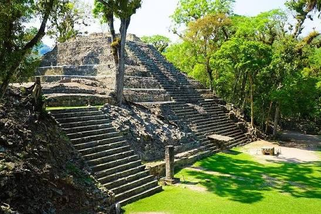
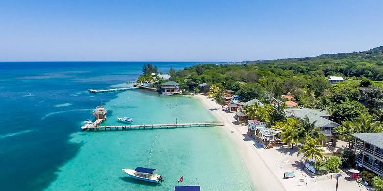

Ruinas de Copan

Cuna de reyes y sabios: Descubrí los secretos de la civilización que desafió al tiempo.
Descubrí este destino
Donde cada comunidad te cuenta una historia y cada tradición te comparte un hogar.
Ven y descubre Honduras, un pais lleno de historia y cultura, explora playas paradisiacas y sus bosques

Cuna de reyes y sabios: Descubrí los secretos de la civilización que desafió al tiempo.
Descubrí este destino

Destino caribeño conocido por sus arrecifes coralinos, y sus playas cristalinas
Descubrí este destino

Las Cataratas de Pulhapanzak son una impresionante cascada de 43 metros de altura formada por las aguas del Río Blanco, situada al norte del Lago de Yojoa en la comunidad de San Buenaventura, municipio de San Francisco de Yojoa, Cortés, Honduras
Descubrí este destino
En conmemoración del legado de Francisco Morazán, invitamos a conocer la historia, cultura y riqueza natural de Honduras, promoviendo un turismo responsable que contribuya a conservar nuestro patrimonio.